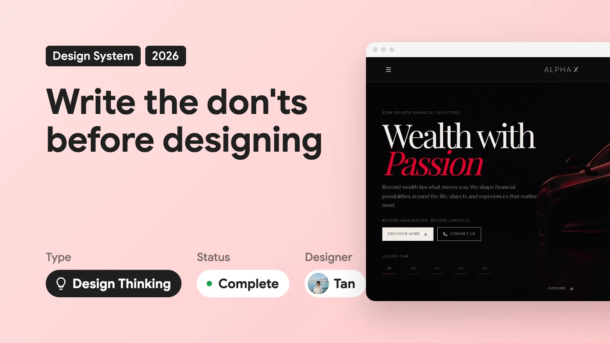
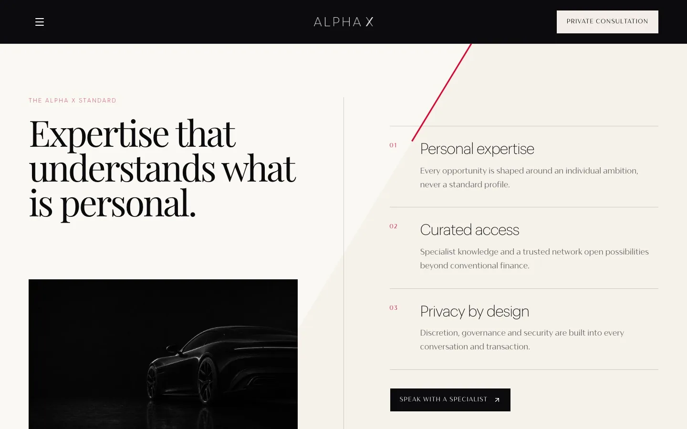
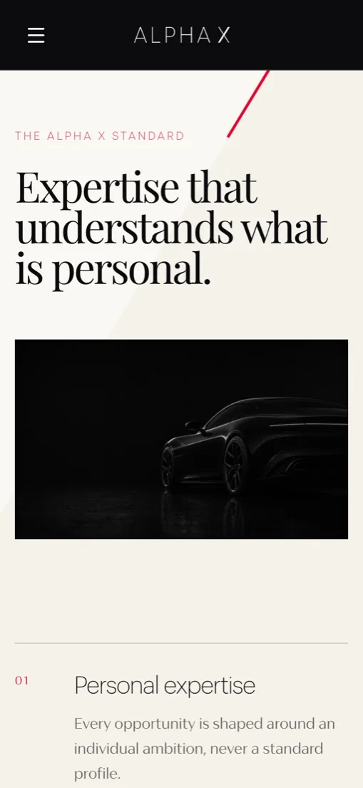
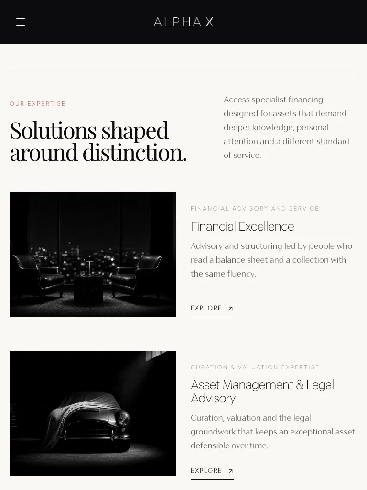
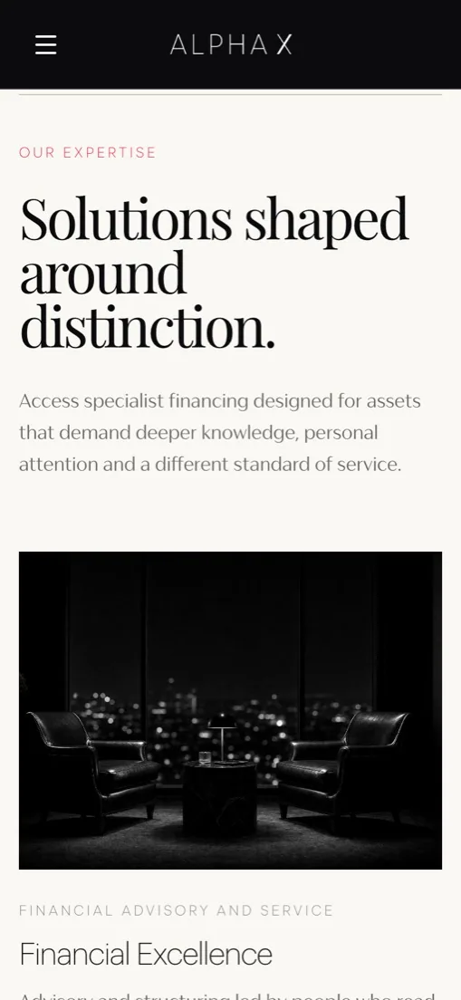
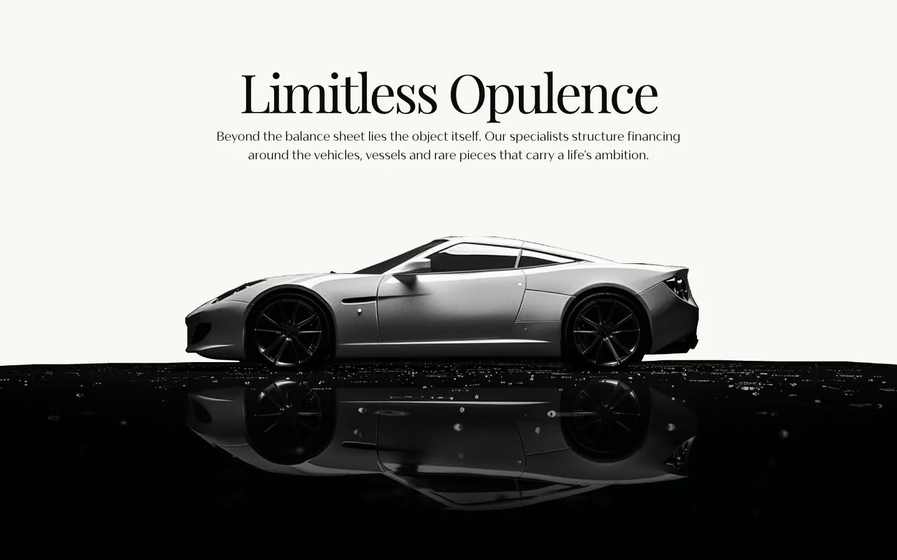

Premium Club Revamp — rules on what not to do, first
A design project that started by admitting the real risk was the work looking like something anyone could make, then built the whole process to prevent exactly that — write the don'ts before starting, move rules into files that can be checked, and build the real thing before the documents.

A website revamp for a premium club where the biggest risk wasn't missing the deadline. It was the work coming out looking like a template. The answer was to write a clear list of things to avoid before opening the first file, then use it to check every page and every slide.
The biggest risk on this project: “you can tell nobody really cared”
For a brand at this level, work that looks like a template isn't just unattractive. It says we don't understand who the client is.

If you saw this on a designer portfolio site, would you believe a studio made it? That single question was the pass/fail check for every page and every slide. Whenever the answer was no, it meant fix it, not explain it.
The same rhythm on every page
Three equal cards centered on screen, repeated on every slide and every section. It's the first thing viewers notice: the work wasn't designed page by page, it was poured into the same frame.
Every heading equally heavy and bold
When every heading gets the same emphasis, nothing is emphasized. The eye doesn't know where to start, and the page instantly looks like everything else.
Effects everyone uses
Purple-to-blue gradients, frosted glass, rounded corners on every box, default shadows, and icons scattered across the page. None of these is wrong on its own, but together they're the signature of work built from defaults.
Walls of text with no rhythm
Long paragraphs back to back with nothing pulled out for emphasis. Good content doesn't get read past the first paragraph, and slides end up looking more like documents than a presentation.
The don'ts list is written before designing, not during review
Rules written in advance are easy to apply because there's no work yet to feel attached to. Rules invented during review tend to become reasons to keep what's already been made.
Three equal cards, rounded corners, default shadows, centered and repeated on every page
Split the screen into large unequal proportions and let the empty space do the work
Every heading equally bold, so nothing stands out
A light serif paired with thin, widely spaced uppercase
Purple-to-blue gradients and frosted glass boxes
The brand's black background, with the logo red used as a single accent line
| Area | Rule | Why |
|---|---|---|
| Icons | One set only | One line icon set across the whole project. No emoji, and no hand-drawn icons mixed in, because mismatched stroke weights are noticeable right away even when viewers can't say what's wrong. |
| Layout | Asymmetric | Split the screen into clearly large proportions and let empty space work. Don't chop the screen into lots of small cards, and don't use the same rhythm on two pages in a row. |
| Typography | Control the weight | Use the brand typeface with a light serif. No heavy bold on every heading. Contrast should come from size and style, not weight alone. |
| Imagery | Art-directed | Every image is graded to the same color set, with grain and imperfect light. Any image that looks obviously synthetic gets redone or cut, never kept just because it took effort. |
| Copy | No stock phrases | Short, confident sentences. No words like “elevate”, “unlock” or “seamless”, and no exclamation marks, because they signal the copy wasn't written for this brand specifically. |
| Signs of craft | Required | Add what templates don't have: graphic motifs drawn from the logo, patterns taken from the brand's print work, and a page numbering system. These are what make the work look like someone thought about it. |
A design system that enforces itself, not just a guideline document
Rules that live only in people's heads always slip when the work is rushed, so as many as possible were moved into files that can be checked.
One token file, shared everywhere
Colors, type and spacing are declared in one place, and both the demo site and the presentation pull from the same set. A color that isn't in this file is a color you can't use.
A contrast checker every color must pass first
A script checks every color pair in the system, and it has to report all pass before the tokens can be used. Readability doesn't depend on whoever happens to remember that day.
Fonts are kept inside the project
No reliance on external font services, because a page that opens during a presentation without its fonts is a page that breaks at the most important moment.
oklch(16% 0.004 285)oklch(21% 0.006 285)oklch(57% 0.24 23)oklch(72% 0.10 84)oklch(95% 0.012 85)It lets you change a color's lightness without its hue drifting, which matters a lot for dark work with a single accent. When the accent has to be lightened to pass contrast, it doesn't turn into a different color.
Changing the order — build the working thing first, then the presentation
The original plan was to make the presentation first and the website demo after, but the order changed partway through for clear reasons.


Mockups in slides can't prove the real thing can be built
A presentation full of nice mockups only shows that we can draw. It doesn't show the real site will turn out that way, and viewers who've seen a lot of this kind of work can tell.
The brand accent failed contrast in many places at once
The accent taken from the logo looks good on dark backgrounds, but on small text its contrast doesn't meet the threshold, and the same problem was spread across many spots in the work.
Every page followed the rules, but together it still looked flat
Every don't was followed and nothing was wrong, but the result had no personality, because a don'ts list can only say what to avoid, not what must be there.
Review page by page against criteria, not by overall feel
A per-page status table, where every page is judged on its own as passed or not yet, with what needs fixing noted.
- Per-page status table — passed / in review / not reviewed, with notes on which pages were fully redesigned and what changed
- Contrast fixed as a batch, not spot by spot whenever someone happened to notice, because problems coming from the same token always come back if you only fix the symptoms
- Always check three widths — design from the small screen first and scale up, not design for large screens and squeeze down
- The final check is a single question — if you saw this where designers post their work, would you believe a studio made it? If you can't say yes without hesitation, it hasn't passed.
 1440
1440
768
393What carries over to other projects
This way of working isn't tied to any one brand, and it has already been reused on the next project.

- Write the don'ts list before starting — the cheapest tool for keeping work from sliding toward defaults, and a shared language when discussing why something needs to change
- Move rules into files that can be checked — contrast checked by a script and contrast that relies on memory give very different results when the work is rushed
- Build the working thing before the documents — you get credibility and proof of the technical proposal in the same piece of work
- Don'ts give you safe work, positive rules give you good work — you need both. With only don'ts you get work where nothing is wrong but nothing is memorable either